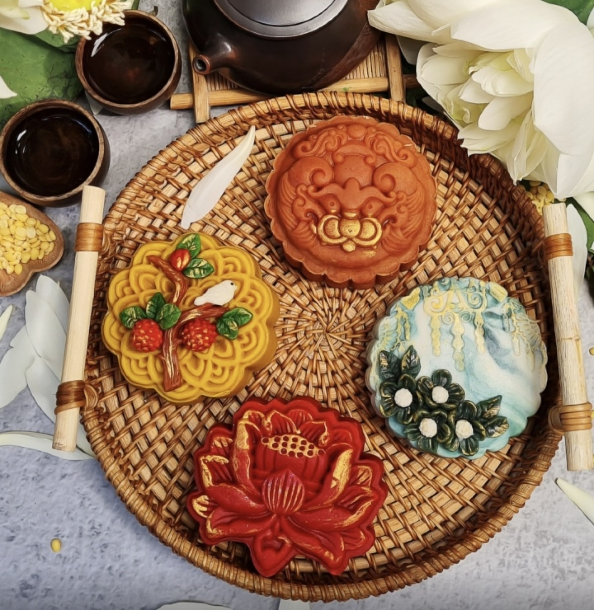

P.M
event about mid-autumn festival
On the evening of September 28, Thai Nguyen City, Pho Yen City, and Phu Lương District organized a joyful Mid-Autumn Festival celebration for children and the local community.
The event was attended by Ms. Nguyen Thanh Hai, Mr. Bui Van Luong, Mr. Le Quang Tien, and other leaders from the province, as well as a large number of local residents, visitors, and children..
